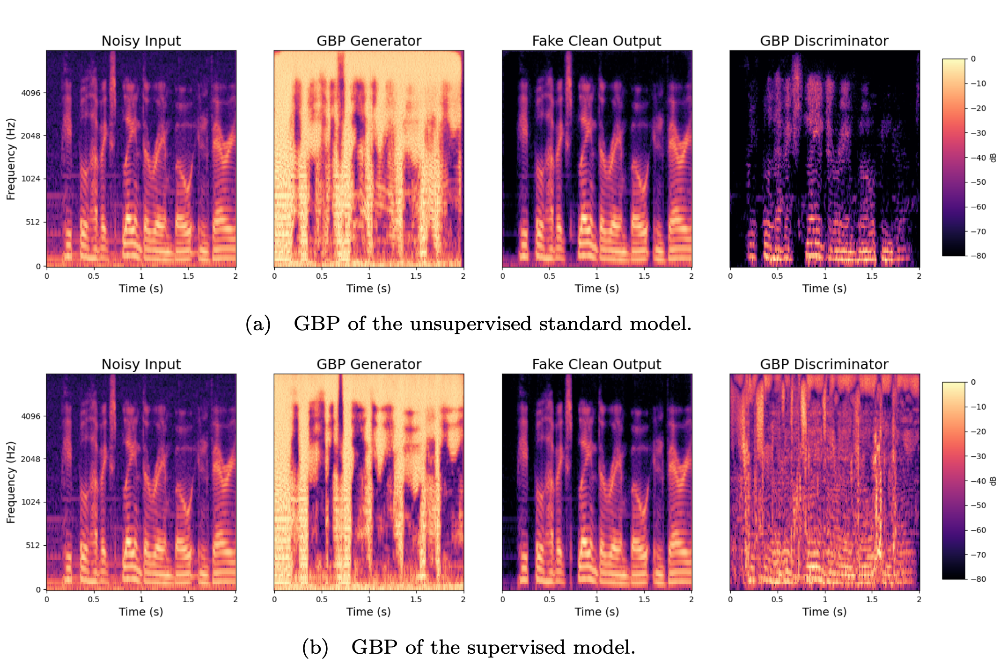

Examples of speech enhancement on VCTKD by our models
Noisy
p232_035
p257_290
p232_295
p257_295
p232_283
Standard Model
p232_035
p257_290
p232_295
p257_295
p232_283
Supervised Model
p232_035
p257_290
p232_295
p257_295
p232_283
Real Clean
p232_035
p257_290
p232_295
p257_295
p232_283
Figure 12 - Supplement
Generated Mask and Fake Clean (Standard Model)
Standard model spectrograms. Spectrograms of a mask (middle) with the original noisy input (left) and the output of the generator (right). The output is the Hadamard product of the noisy input and the mask.
Noisy
Generated Fake Clean
Real Clean
Figure 16 - Supplement
Generated Spectrograms and Masks (Standard and Supervised models)
Spectrograms generated by the standard model (a) and the supervised model (b). For each model, we display the noisy input, the generated mask, the fake clean output, which is the Hadamard product between the input and the mask, and the real clean spectrogram.
Noisy
Fake Clean (Standard)
Fake Clean (Supervised)
Real Clean
Figure 17 - Supplement
Guided Backpropagation
Guided backpropagation for the unsupervised standard model (a) and the supervised model (b). The bright areas indicate high gradient values when backpropagating with regard to the original input. The GBP plots show the areas of the input spectrogram that have a high effect on the updates of model weights. From left to right; noisy (same file in both rows), GBP for the generator, fake clean, and the GBP for the discriminator given the fake clean spectrogram.

Noisy
Fake Clean
(Standard)
Fake Clean
(Supervised)
Real Clean
Figure 29 - Supplement
AudioSet - Best and Worst Improvement
Spectrograms of original noisy AudioSet examples. (a) shows the four examples where the AudioSet model improves SI-SDR the most and the corre- sponding fake clean spectrograms. (b) shows the same but for the four examples where SI-SDR is decreased the most. Improvement is calculated by subtracting the score of the original audio from the score of the generated audio. When inspecting the spectrograms and listening to the audio, it is clear that speech enhancement is not achieved.
Noisy1
Noisy2
Noisy3
Noisy4
Generated1
Generated2
Generated3
Generated4
Noisy1
Noisy2
Noisy3
Noisy4
Generated1
Generated2
Generated3
Generated4
Randomly Chosen Examples of AudioSet Training Data